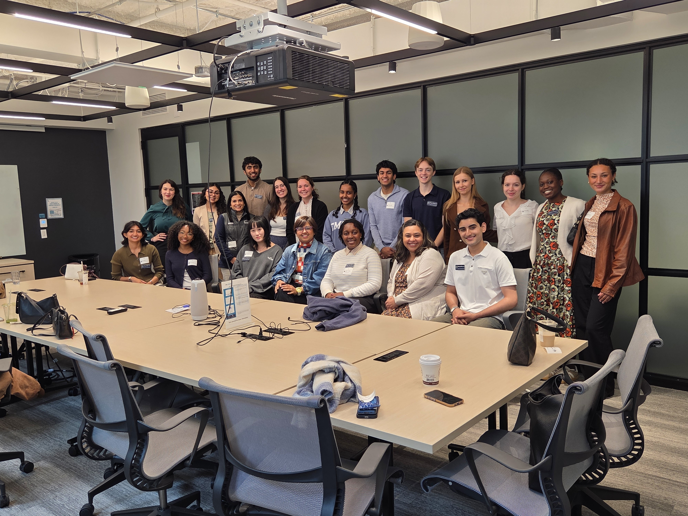
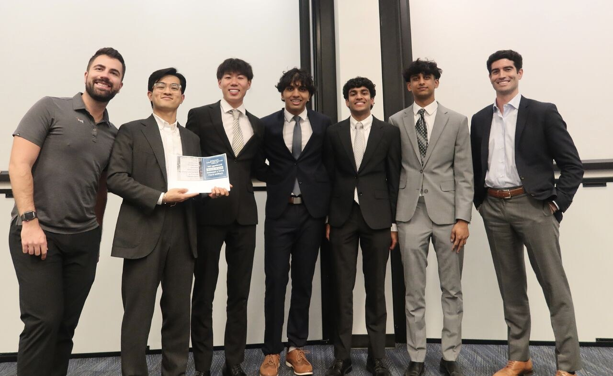

Hi, my name is Roshan.
Researcher, educator, and builder exploring health, data, policy, and technology.
Emory University • Robert W. Woodruff Scholar • Human Health & Economics

Recent
Building My Personal Website
Learning HTML, CSS, Git, and GitHub Pages while creating a public home for my research, projects, and writing.

Visiting Emory Alumni in Boston
Connecting with leaders across biotechnology, healthcare, policy, and the arts to learn how they have built meaningful careers beyond traditional boundaries.
Presenting Research at IDWeek 2026
Presenting research on persistent COVID-19-associated drug, alcohol, and firearm mortality trends and their implications for public health and transplantation.

Competing in My First Business Case Competition
Placing second overall in the Goizueta Business School and PwC case competition with an all-freshman team.